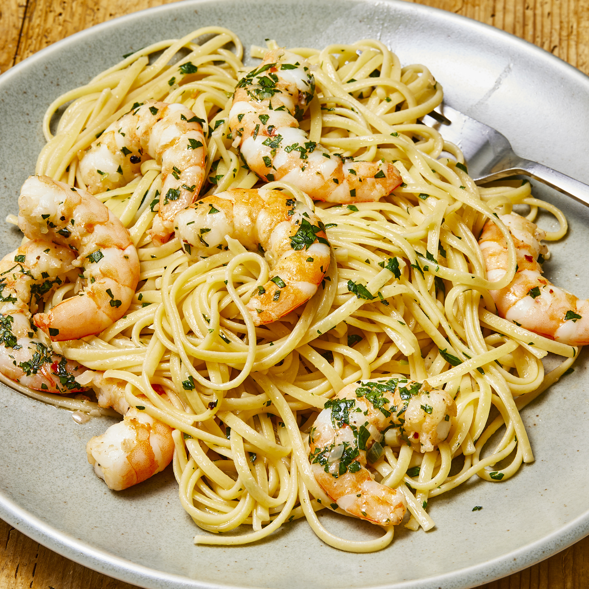

Shrimp Scampi

Quick and easy lunch
perfect for a weeknight dinner yet exciting enough for entertaining guests
on the weekend. It's a simple dish made with a handful of flavorful
ingredients that all come together and compliment each other perfectly.
Ingredients
- 2 tbsp - Olive oil
- 4 tbsp - Butter
- 4 pcs - Large garlic cloves, minced
- 1 1/4 lbs - Shrimp
- Salt and ground black pepper to taste
- 1/4 cup - Dry white wine or broth
- 1/2 tsp - Crushed red pepper flakes or to taste
- 2 tbsp - Lemon juice
- 1/4 cup - Chopped parsley
Steps
-
Heat olive oil and 2 tablespoons of butter in a large pan or skillet.
-
Add garlic and sauté until fragrant (about 30 seconds - 1 minute).
-
Then add the shrimp, season with salt and pepper to taste and sauté for
1-2 minutes on one side (until just beginning to turn pink), then flip.
- Pour in wine (or broth), add red pepper flakes (if using).
-
Bring to a simmer for 1-2 minutes or until wine reduces by about half
and the shrimp is cooked through (don't over cook your shrimp).
-
Stir in the remaining butter, lemon juice and parsley and take off heat
immediately.
-
Serve over rice, pasta, garlic bread or steamed vegetables (cauliflower,
broccoli, zucchini noodles).